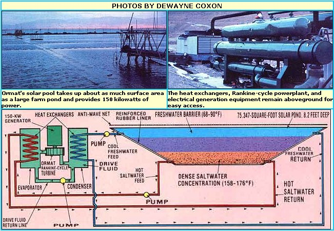

"Salt" away usable electric energy in a backyard brine pool!
Recently, one of MOTHER's technical editors and her tour director returned from a wonderfully informative ten-day solar tour of Israel . . . jointly sponsored by Jordan College, Solar Age magazine, and THE Mother Earth News (restricted) . The trip was intended to both entertain and educate . . . and-judging from the enthusiastic response of the tour group-it fully succeeded on both counts!
One of the most impressive sights of the entire excursion was a small power-generating station located at the southern end of the Dead Sea. . . where a considerable amount of electricity is being produced, using solar energy. You might well assume that the plant operates on photo-voltaic's, but-if that's what you're thinking-you'll have to guess again. The new power-generating facilities are solar ponds. . . inexpensive, often naturally occurring phenomena that may just hold the secret to a safe and reliable, middle-technology form of energy production!
Needless to say, MOTHER is very interested in any power system that delivers a lot for a little. So-in addition to reporting on what we saw in Israel-we fully intend to research, first hand, the possibility of scaling down both the size and technology of the operation . . . in order to put it on the "little guy's" level, and maybe open up a whole new world of energy independence for us all!
As anyone who's worked with solar energy knows, one of the major stumbling blocks to a successful "sun" system is the difficulty of obtaining effective heat storage, regardless of whether the collection medium is air or liquid. (With a fluid system, the problem is further compounded by the fact that leakage may be disastrous, and equipment costs can be prohibitive.) What's more, solar setups of any kind require collectors . . . which can often mean additional expense and headaches.
So it makes sense that any solar energy system which does away with collectors and storage tanks has an obvious advantage over the more common techniques. The question is, how can a solar power operation get by without what are usually thought of as the two most important components? And the answer is . . . by using a saline pond. Yes, believe it or not, technicians from Ormat Turbines, Ltd.-an Israel-based manufacturer of Rankine-cycle drive turbines-have developed a system which uses heat that's gathered and stored in a pool of salt water to generate up to 150 kilowatts of electrical power!
Ormat's entire system is actually quite straightforward. The firm's pilot project-located at En Boqeq on the Dead Sea-utilizes a man-made pond measuring 75,347 square feet and extending to a depth of just over eight feet. This pool is lined with a reinforced rubber "skin" that prevents seepage of the briny liquid into the ground-and into the fresh water table-below. (The En Boqeq installation uses no insulative layer between the earth and the water . . . however, under certain conditions, such thermal protection may be desirable-in order to maintain optimum water temperature-in addition to the brine barrier.)
The pond itself is filled with a dense salt solution, which naturally separates into gradient levels: In other words, a weaker salt mix exists near the water's surface, and the higher-and thus denser -saline concentrations settle to the bottom. The topmost layer is, of course, relatively fresh water. As the sun beats down on the brine reservoir, its thermal energy passes through the "lighter" surface levels and heats the heavy saline mass below. Because of the intense density of the solution at the bottom of the pond, the mixture resists the convection process which would cause mixing, and thus uniform warming, in a body of fresh water . . . and the result is that the dense salt solution-held at the bottom of the pool and thermally protected by the surface layer-can reach temperatures as high as 194°F (year-round working temperatures generally fluctuate between 158 and 176°F). The water at the surface of the pond, of course, stays at a warmth that's "normal" for the desert region: between 68 and 90°F, depending on the season.
In order to take advantage of the heat stored in the salt gradient pool, Ormat engineers utilize a three-cycle (evaporation, drive, and condensation) system. Here's how it works: The hot salt water is pumped through a heat exchanger, which is surrounded by a vessel filled with a substance similar to Freon. This, in turn, is connected to a turbine that's specially designed to be driven by a much lower-temperature propellant than that used in a conventional steam turbine. Since the medium changes from liquid to gas at a relatively low heat, the sun warmed water instantly flashes the fluid into a pressurized vapor . . . which drives the turbine and its 150-kilowatt AC generator.
After the vapor has done its work, it passes on to yet another chamber where it's condensed to the liquid stage again by cooler water-taken from the surface of the pond-that's pumped into a second set of heat exchange tubes within the vessel. The drive fluid is then ready to be recycled. In this manner, the "refrigerant" fluid-and both the cool and hot water reserves-are used repeatedly, within a closed system, to eliminate waste. The only liquid that has to be replenished now and then is-because of evaporation losses-the upper layer of fresh water.
The beauty of the En Boqeq installation-and of any solar pond-is that it will function day and night, winter and summer, regardless of whether or not the sun is shining steadily . . . since the pool provides such a massive heat sink. The Ormat pilot project has been so successful, in fact, that the Israeli government is working with the firm to build a 5,000-KW power station that should be completed within two years, and the nation eventually hopes to use a 154-squaremile portion of the Dead Sea to generate enough electricity to supply all of Israel's power requirements for the future! (Of course, in a body of water this size-and even in a pool as relatively small as the En Boqeq test site-winds can cause undesirable disturbances. The problem is minimized by the use of plastic nets strung across the surface of the pond.)
It's not difficult to imagine that solar ponds might just be the "new wave" of alternative energy . . . especially since costs (calculated by Ormat to be in the $2,000-per-kilowatt range) are even now competitive with conventional utility-supplied power. But if the technology can be reduced to a "backyard tinkerer's" level-and the environmental danger of brine leakage into the water table can be eliminated-there's no reason why anyone with even a few acres of land can't be totally energy self-sufficient . . . or, at the very least, enjoy the benefit of reliable solar heat at a minimum of cost.
EDITOR'S NOTE: MOTHER's editors would like to caution would-be experimenters regarding the environmental hazards that would be posed by a salt pond leak. We are at present researching small-scale saline gradient ponds and looking into the sealing techniques required for their safe success ... 80 please, folks, don't begin experimentation until you're absolutely certain you won't be doing any harm. On the brighter side, if you'd like to see the Ormat setup firsthand-and the other Israeli solar projects-take a look at page 70 of this issue for details on MOTHER's second solar tour of Israel! And-for more on Rankine-cycle electricity generation-see the OTEC article on page 196.
|
 |
|
|